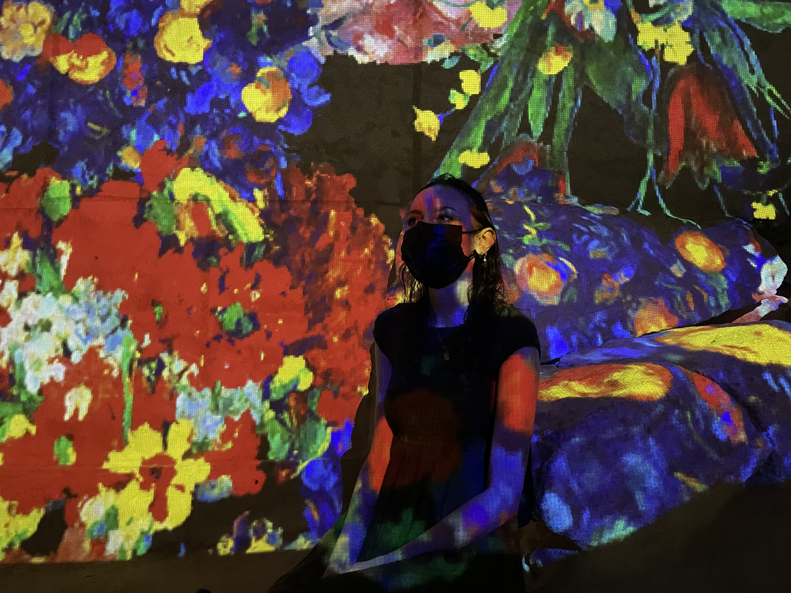

My name is Stephanie Taillard (you can call me Stephanie or Steph). I've been interested in computers and technology since as young as I can remember. I was always going through settings and the control panel intrigued about what could be changed and what everything meant. I was/am often the person that my family would ask if they ever had a problem and I enjoyed doing it.
I have some beginner experience with web development (mostly HTML) from Neopets, Myspace, and other miscellaneous things like making my own forums through services like phpBB. I'm looking forward to this class filling in my knowledge gaps and giving me more practical skills. I'm especially excited to learn Javascript.
After graduating from Tri-C, I would love to eventually get a remote job or even work somewhere like Tri-C. One of my dream goals is to own a home somewhere surrounded by nature and maybe even mountains.
This Wikipedia page is pretty cool.
